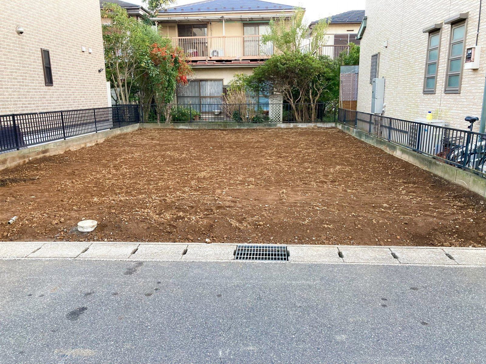
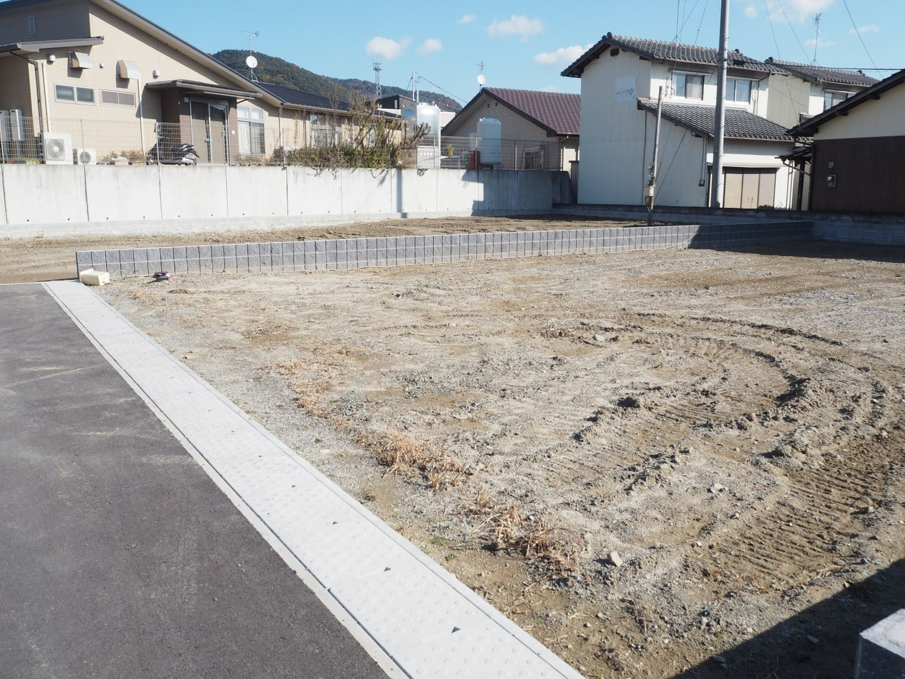
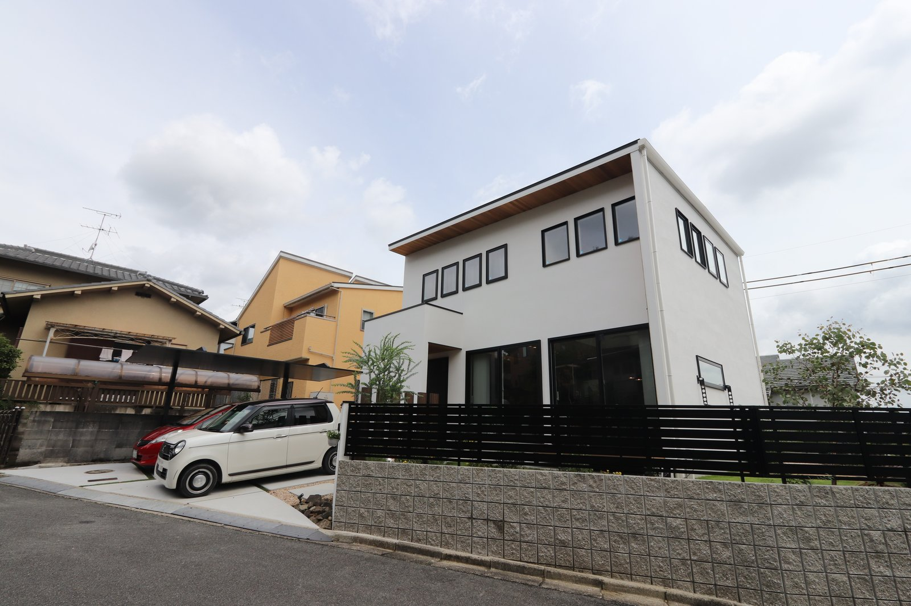
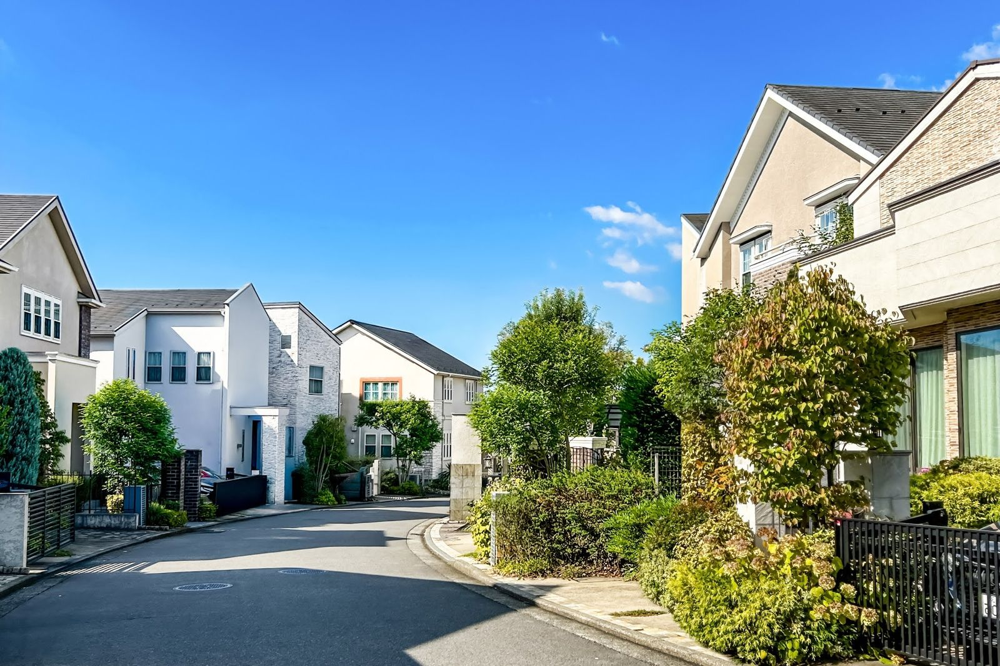

土地が決まって、これから見積もり。
そこで初めて出てくる数字があります。
それが地盤改良の費用です。

強いか弱いかが分かるのは、買ったあとに調べてからです。
やっかいなのは、金額の幅が大きいこと。
必要なければ0円。
必要になれば、100万円を超えることもあります。
しかも、土地を買う前には調べられないことがほとんどです。
だから先に、幅と条件だけ知っておいてください。
この数字は一般的な目安です。
実際は土地の状態と、あとで説明する条件で動きます。
地盤改良とは、土地を補強する工事
家を建てる前に、その土地が家の重さに耐えられるかを調べます。
これが地盤調査です。
調べた結果、そのままでは弱いとなれば、補強します。
これが地盤改良です。
建物ではなく、土地に対する工事です。
だから建物本体の価格には入っていません。
外構や諸費用と同じで、別に見ておく費用です。
外構・諸費用・地盤改良・家具家電。
ここまで足した金額が、本当に必要なお金です。
土地を買う前には、調べられません
「買う前に地盤を調べておけばいい」
そう思いますよね。私もそう思っていました。
ところが、地盤調査は敷地に機械を入れて行います。
まだ自分のものではない土地に、機械は入れられません。
売主の承諾が要りますし、断られることも珍しくないのです。
結果として、多くの方は「たぶん要る」という前提で予算を組みます。
もし要らなければ、その分が浮く。
この順番なら、あとで慌てません。

この地面の下がどうなっているかは、自分のものになるまで調べられません。
金額が大きく変わる3つの条件
1. どの工法になるか
大きく3つあります。
地面から2mほどの浅い範囲を固める表層改良。
2mから8mくらいまで、柱状に固めた杭を打つ柱状改良。
鋼の管で深くから支える鋼管杭。
奈良で多いのは柱状改良です。
杭を何メートル打つか、何本打つか。
ここで金額が動きます。
2. 工事の車が入れる道路の幅
次に効いてくるのが、現場までの道の幅です。
地盤改良の機械を積んだ車は、思ったより大きい。
通れなければ、小さい車に積み替えて運びます。
この積み替えの手間賃が、見積もりに乗ります。
古い町並みや、旗竿地の奥。
土地を見に行ったら、そこまでの道も見ておいてください。
3. 道路との高低差
道路より高い土地は、見晴らしがよく人気があります。
ただ、工事の車を敷地に上げられません。
資材も吊り上げることになります。

見晴らしは気持ちいいのですが、工事の車が上がれない分だけ費用が乗ります。
地盤改良だけでなく、建築工事そのものの費用も上がります。
高低差のある土地は、値段が安いことがあります。
安い理由が、ここにあることも多いのです。
奈良の地盤は弱いのでしょうか
よく聞かれます。
正直にお答えすると、場所によります。
奈良盆地は、昔の川筋や水田を造成した土地が多い地域です。
地盤調査をして改良が必要と判定される割合は、全国平均よりやや高いという調査もあります。
（ジャパンホームシールド 2017年度調べ／奈良県41.8％・全国平均37.1％）

見た目では分からないので、その土地ごとに調べるしかありません。
ただ、これは県全体をならした数字です。
同じ市内でも、一区画違えば結果は変わります。
「奈良だから弱い」ではなく、その土地ごとに調べる。
それだけです。
改良が必要と言われても、もう一度見てもらえます
地盤調査の結果は、判定する機関によって変わることがあります。
同じデータでも、改良が不要になることがあるのです。
これをセカンドオピニオンと呼んでいます。
シバ・サンホームでは、地盤調査の結果を複数の機関に委託して確認しています。
数十万円が動く話です。
一度で決めてしまわないでください。
安全に関わる工事だからです。
値切るのではなく、必要かどうかを正しく見る。
お金の話としても、それがいちばん効きます。
見積もりの、どこを見ればいいか
住宅会社から出てくる最初の見積もりに、地盤改良費が入っていないことがあります。
入っていない理由は「まだ調べていないから」です。
悪いことではありません。
問題は、それが説明されているかどうか。
総額を安く見せるために黙っている会社と、
「ここは調査後に確定します」と先に言う会社では、あとの安心感が違います。
聞き方は簡単です。
「この見積もりに入っていない費用を、全部教えてください」
この一言で、会社の姿勢が分かります。
まとめ
- 地盤改良は0円のこともあれば、100万円を超えることもある
- 土地を買う前には調べられないので、要る前提で予算に入れておく
- 金額は「工法・道路の幅・高低差」の3つで動く
- 改良が必要と言われたら、別の機関にも見てもらう
- 最初の見積もりで「入っていない費用」を全部聞く

奈良の工務店シバ・サンホームで、初めての家づくりに伴走しています。お金のことこそ正直に。モットーはスピード・誠実さ・楽しさ。